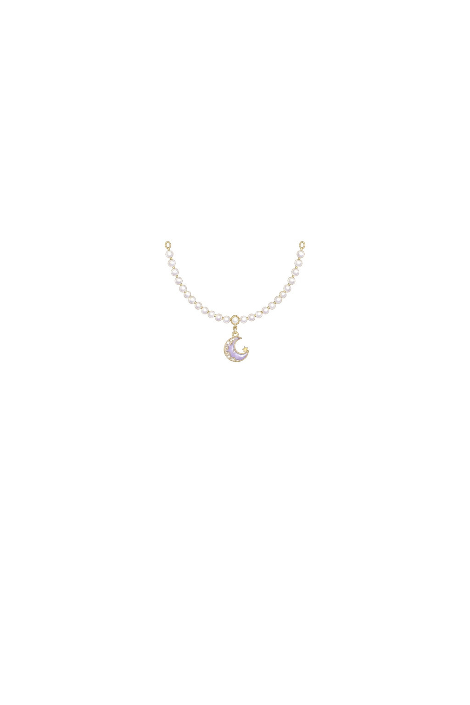
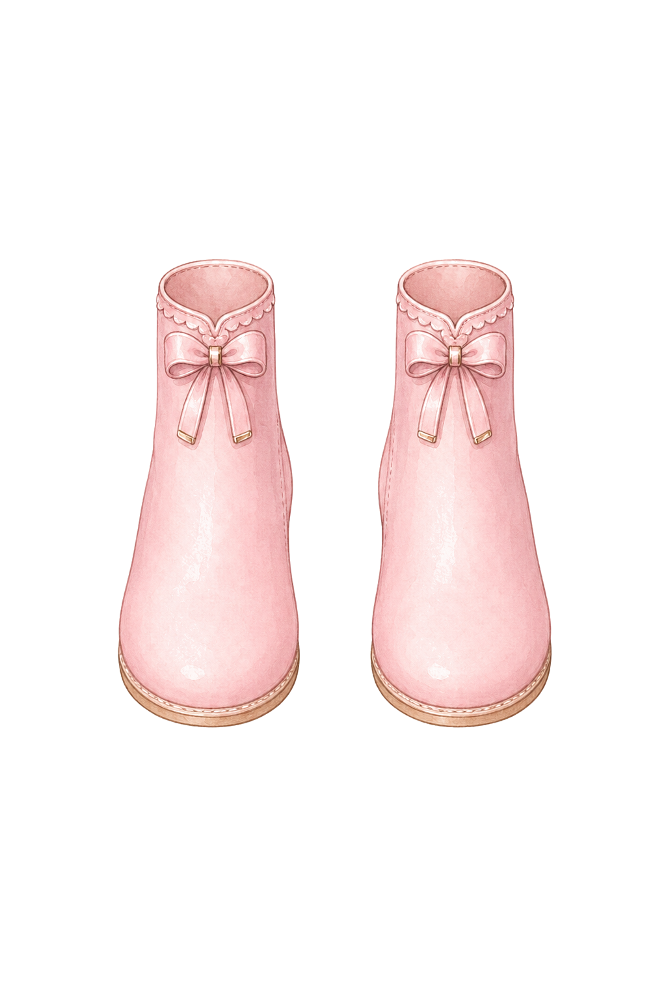
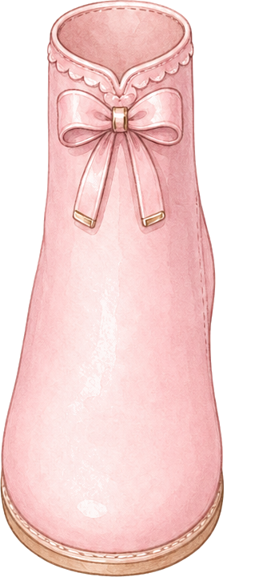
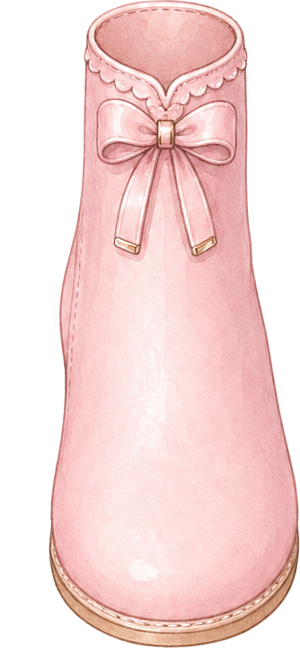
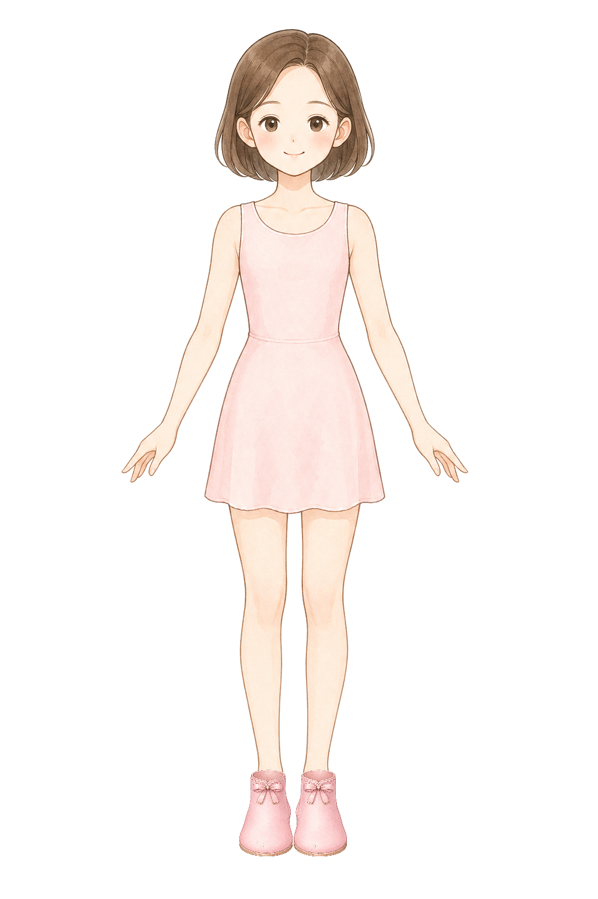
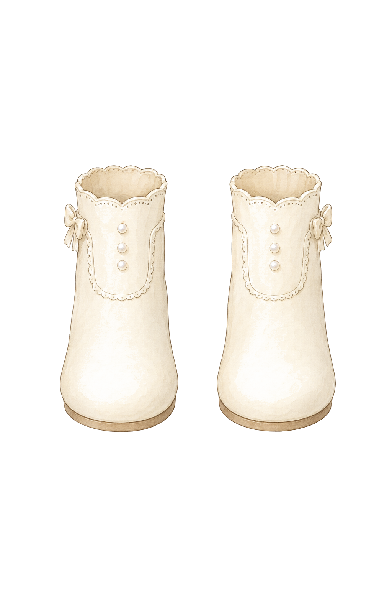
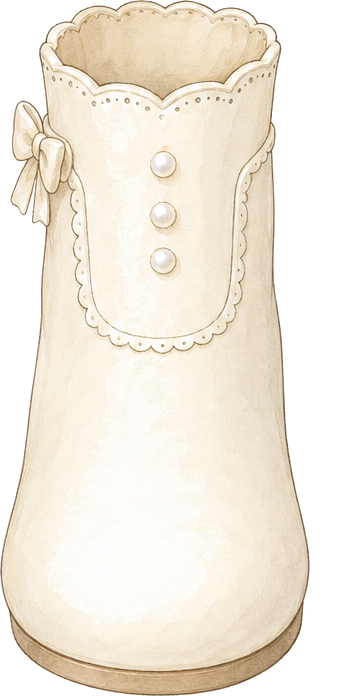
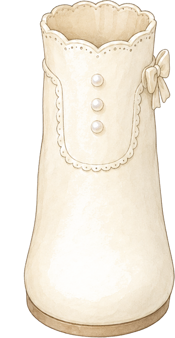
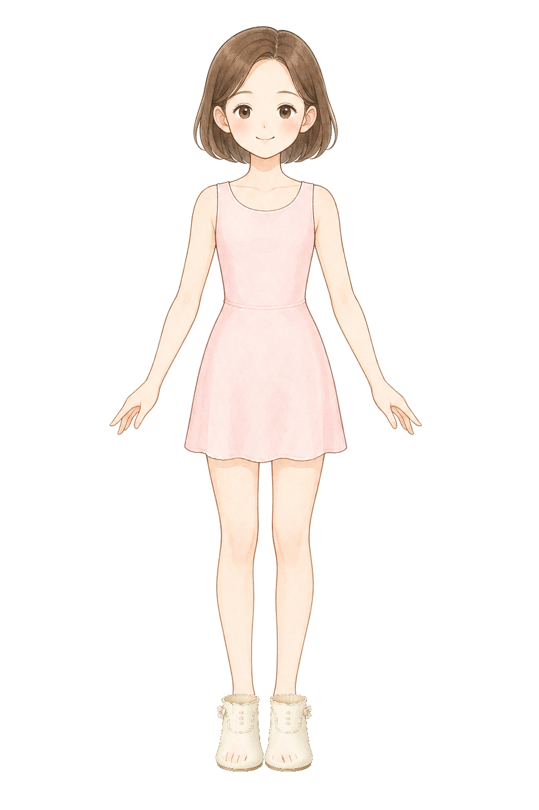

single small delicate princess necklace layer for a children dress-up game, original pastel storybook encyclopedia illustration matching a soft Japanese picture-book fashion encyclopedia, soft watercolor-like coloring, clean fine linework, front view, draw only the necklace and no body, no neck, no skin, no dress, no mannequin, no shadow, pure white 1024 by 1536 canvas, very narrow symmetrical shallow U-shaped fine gold chain with one tiny pale pink ribbon charm, pendant exactly on the body center line at canvas x 504 y 424, left chain start near canvas x 452 y 340 and right chain start near canvas x 556 y 340, total visible necklace width between 100 and 125 pixels, small enough to sit on the inner shoulder and collarbone line, do not extend to shoulder straps, do not make a wide shoulder-draped necklace, no earrings, no tiara, no text, no watermark
necklace
Necklace: moon pearl stability fit
ok
BaseCutout

Re-anchored normalizedComposite
single small delicate princess necklace layer for a children dress-up game, original pastel storybook encyclopedia illustration matching a soft Japanese picture-book fashion encyclopedia, soft watercolor-like coloring, clean fine linework, front view, draw only the necklace and no body, no neck, no skin, no dress, no mannequin, no shadow, pure white 1024 by 1536 canvas, very narrow symmetrical shallow U-shaped pearl chain with one tiny crescent moon charm, pendant exactly on the body center line at canvas x 504 y 424, left chain start near canvas x 452 y 340 and right chain start near canvas x 556 y 340, total visible necklace width between 100 and 125 pixels, small enough to sit on the inner shoulder and collarbone line, do not extend to shoulder straps, do not make a wide shoulder-draped necklace, no earrings, no tiara, no text, no watermark
boots
Boots: ribbon ankle stability fit
ok
BaseCutout

Left split

Right split

Left measured normalizedRight measured normalizedComposite

pair of slim short ankle boots only for a children princess dress-up game, original pastel storybook encyclopedia illustration, soft watercolor-like coloring, clean fine linework, front view boots only, no legs, no feet, no socks, no skin, no body, no mannequin, pure white 1024 by 1536 canvas, narrow boot openings matching a small ankle width, rounded toes that cover the full toes, soft rose pink ankle boots with a tiny ribbon detail on each boot, left boot and right boot are the same size, separated as a matched front-facing pair, not oversized, no text, no watermark
boots
Boots: pearl button stability fit
ok
BaseCutout

Left split

Right split

Left measured normalizedRight measured normalizedComposite

pair of slim short ankle boots only for a children princess dress-up game, original pastel storybook encyclopedia illustration, soft watercolor-like coloring, clean fine linework, front view boots only, no legs, no feet, no socks, no skin, no body, no mannequin, pure white 1024 by 1536 canvas, narrow boot openings matching a small ankle width, rounded toes that cover the full toes, cream white ankle boots with tiny pearl button details kept very small, left boot and right boot are the same size, separated as a matched front-facing pair, not oversized, no text, no watermark